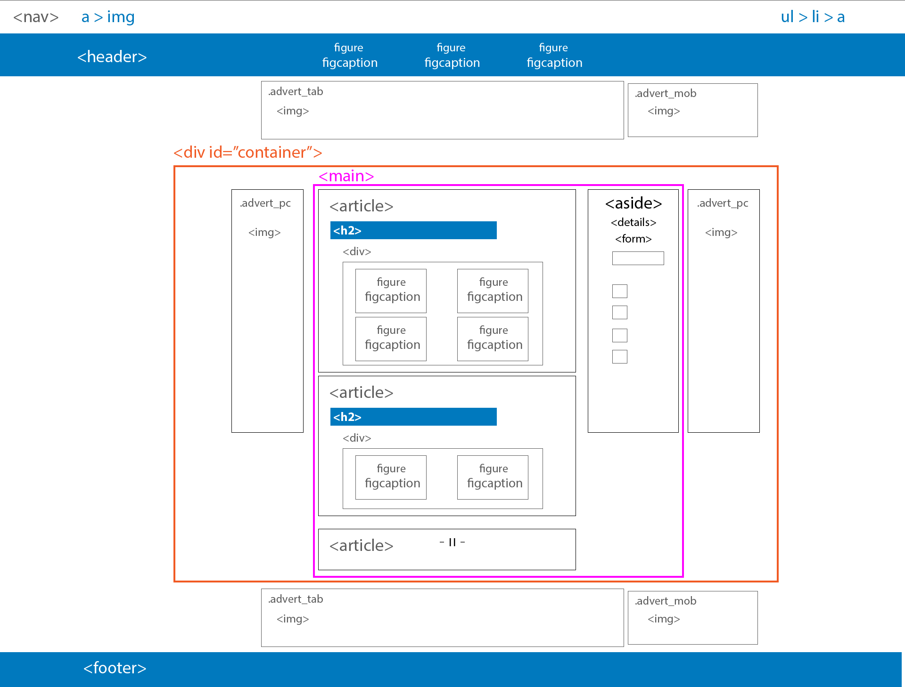
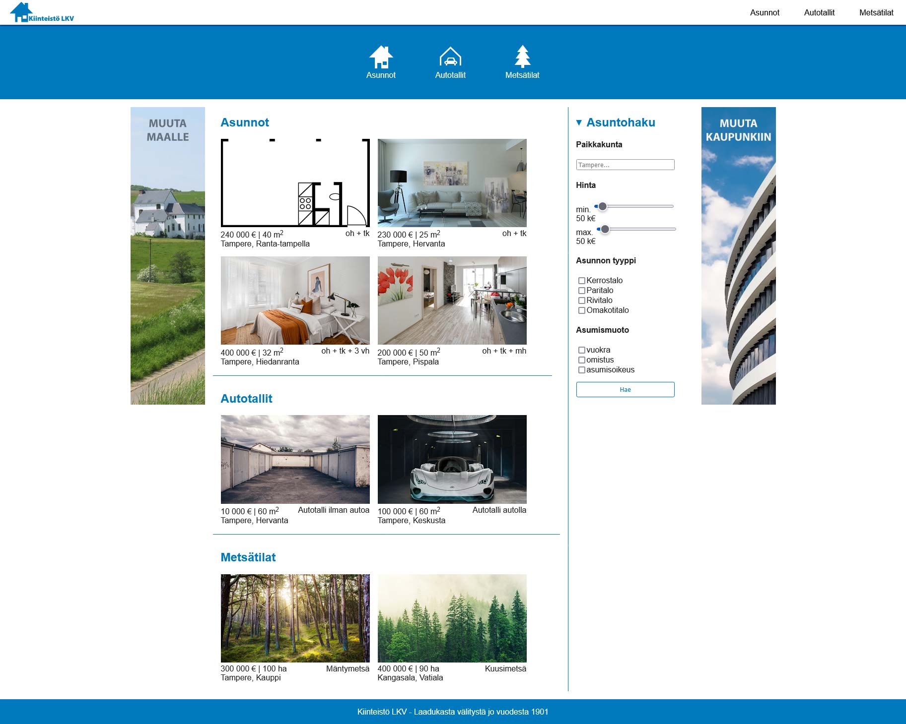
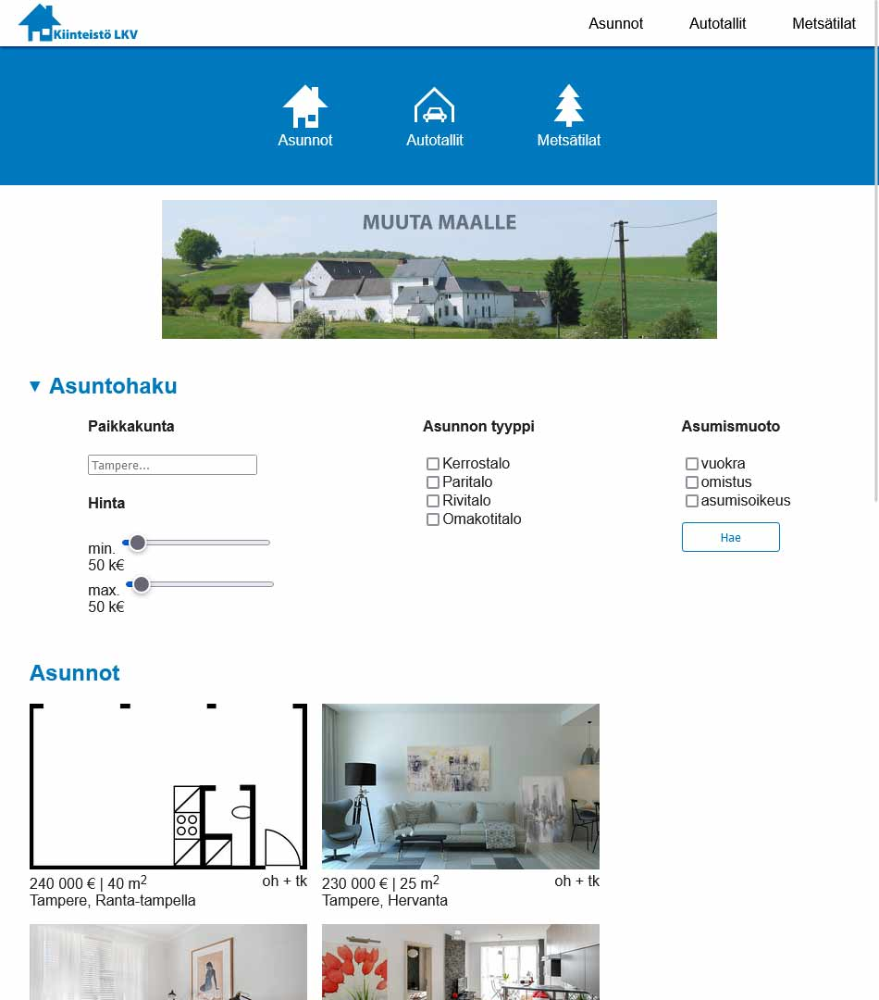
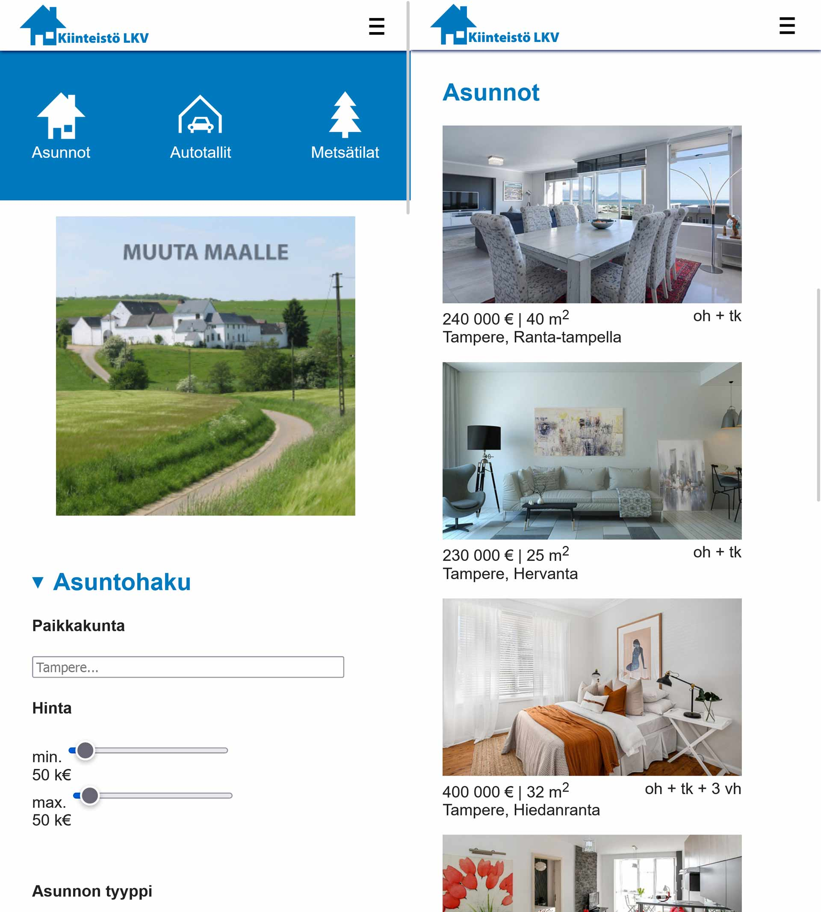

CSS Grid: Holy Grail
Layout
Screenshots
  Tehtävä
HTML (1/2) Holy Grail Layout
- Tutustu Holy Grail layoutin ja css gridin periaatteisiin
- Holy grail wikipedia
- css grid w3schools
Saat ladattua projektin kuvat helpoiten, kun kloonaat ensin malli-repon työpöydälle
ja sitten siirrät img ja svg kansiot omaan harjoituskansioosi
- Luo index.html ja style.css
- Alusta index.html
- Linkitä style.css headiin
- Vaihda dokumentin title esim. Kiinteistö LKV
- lisää favicon img/house_fav_icon.png
- Anna bodylle id top
- Lisää navigaatio:
- Käytetään samaa navigaatiota, kuin Kalatorissa Responsiivinen navigaatio
- Tee menu.css ja linkitä se headiin
- Kopioi Kalatorin navigaation css koodi menu.css tiedostoon
- Kopioi navigaation html-koodi bodyyn
- vaihda navigaation logo svg/house_logo.svg
- Lisää muut layoutissa käytetyt elementit bodyyn:
- header
- div class="advert_tab"
- div class="advert_mob"
- div id="container"
- class="advert_pc"
- main
- article id="aparts"
- article id="garages"
- article id="forests"
- aside
- class="advert_pc"
- div class="advert_tab"
- div class="advert_mob"
- footer
CSS (1/2) style.css
:root tee muuttujat:- navigaation korkeus 50px (--nav-height)
- headerin korkeus 150px (--header-height)
- footerin korkeus 50px (--footer-height)
- teemaväri esim. sininen (--sky_blue)
Eli siis: Määritettiin elementtien laskentatapa siten , että padding ja reunaviiva siältyvät ulkomittoihin Ankkurilinkit rullaavat sivun tiettyyn, kohtaan, mutta koska nav on position fixed se peittää osan sisällöstä alleen. Jotta otsikko jonka kohdalle scrollataan jää näkyviin, tarvitaan scroll-marginaali. Hyvällä tuurilla myös scroll-behavior: smooth toimii ja lisää scrollaukseen kiihtyvyyden, suoran hypähdyksen sijaan.
-
body
- nollaa marginaalit
- aseta taustaväri esim. valkoinen
- valitse Google-fonts fontti tai käytä Arial nav
- lisätään navigaatiolle vielä heittovarjo alareunaan
- aseta z-index: 999; jotta navigaatio on kaikkien elementtien päällä myös scrollatessa #container
- keskitä sisältö vaakasuunnassa margin: 0 auto;
- tee containersita flex elementti
- jeskitä flex sisältö vaakasuunnassa .advert_pc
- lisää ylämarginaalia
- aseta minimileveys 150px .advert_tab
- aseta leveys 100%
- aseta maksimileveys 800px
- aseta minimikorkeus 150px
- lisää ylös 1em marginaali
- laita vasen ja oikea marginaali auto, jolloin keskität elementin
- nollaa alamarginaali
- aseta display: none; koska tablettimainos ei kuulu olla näkyvissä työpöytänäkymässä .advert_mob
- lisää padding 1em (joka puolelle)
- aseta display: none; koska mobiilimainos ei kuulu olla näkyvissä työpöytänäkymässä header
- aseta valitsemasi teemaväri ja käytä muuttujaa
- aseta elementin korkeus ja käytä muuttujaa
- aseta ylämarginaali ja käytä muuttujaa
- tee headerista flex elementti
- keskitä sisältö vaaka- ja pystysuunnassa main
- lisää padding 1em (joka puolelle)
- aseta taustaväriksi esim. valkoinen
- aseta tumma tekstin väri
- tee mainista 100% leveä
- aseta maksimileveys 1000px
- eli siis, asetettiin main täyttämään navigaatiolta, headerilta ja footerilta jäljelle jäävä tila ruudun korkeudesta
- tee mainista grid elmentti display: grid;
- aseta 1em tilaa grid elementien väliin gap: 1em;
- aseta paddin 1em
- aseta näkyvä taustaväri (väliaikaisesti)
- grid-area: aparts;
- eli siis div jolla on id aparts, käyttää nyt gridin soluja aparts #garages
- aseta näkyvä taustaväri (väliaikaisesti)
- grid-area: garages; #forests
- aseta näkyvä taustaväri (väliaikaisesti)
- grid-area: forests; aside
- grid-area: aside;
- aseta näkyvä taustaväri (väliaikaisesti)
- aseta padding 1em
- aseta vasemmalle ohut reunaviiva footer
- aseta footerille sama taustaväri kuin headerille
- aseta footerin korkeus käyttäen muuttujaa
- tee footerista flex elementti
- keskitä flex sisältö vaaka- ja pystysuunnassa
eli siis ruudukossa on 3 riviä ja 3 saraketta
ylimmällä rivillä on 2/3 osaa #aparts elementtiä ja 1/3 osaa aside-elementtiä
keskirivillä on 2/3 osaa #garages elementtiä ja 1/3 osaa aside-elementtiä
keskirivillä on 2/3 osaa #forests elementtiä ja 1/3 osaa aside-elementtiä
@media only screen and (max-width: 1050px){
.advert_pc
piilota pc mainos
.advert_tabnäytä tablettimainos display: block;
keskitä teksti
.advert_tab imgrajoita kuvan max leveys 100%
mainmuokkaa gridiä:
nyt gridissä on vain yksi sarake ja kaikki elementit ovat päällekkäin
asidepoista vasen reunaviiva
form- vaihda flexin suunta pystyyn flex-direction: row;
- tasaa flex elementit justify-content: space-around;
- lisää tyhjää tillaa flex elementtien väliin gap: 2em;
.advert_tab
piilota tablettimainos
.advert_mobnäytä mobiilimainos display: block;
keskitä teksti
article div, section divkäännä artikkelin flexin suunta pystyyn flex-direction: column;
formkäännää lomakkeen flexin suunta pystyyn flex-direction: column;
}